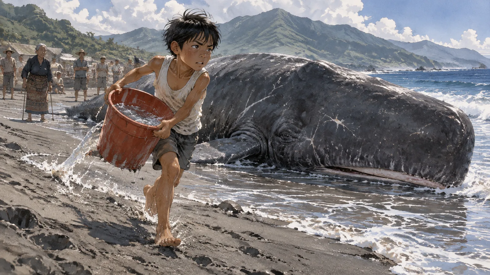
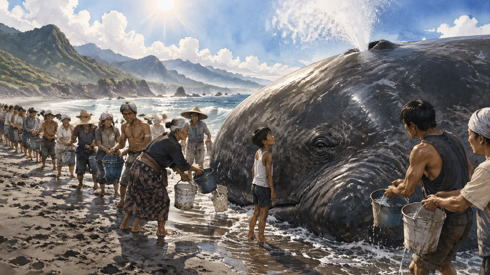
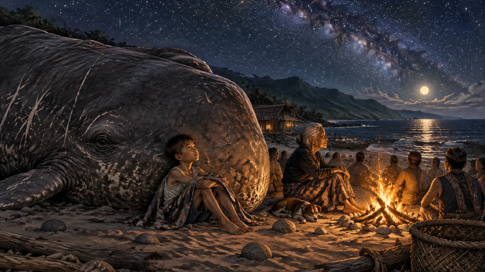
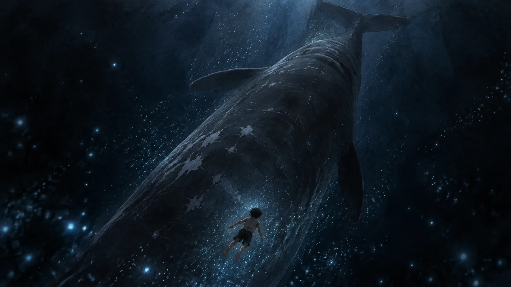
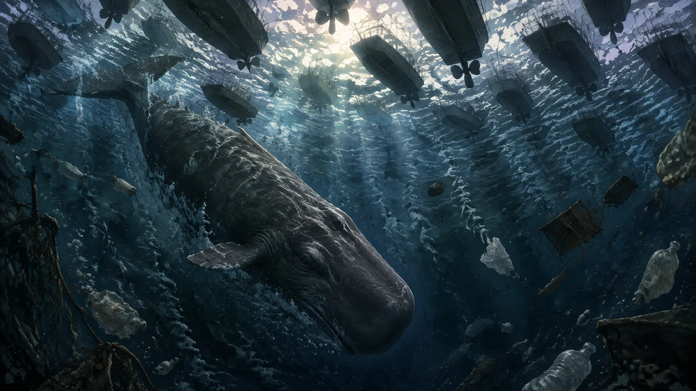
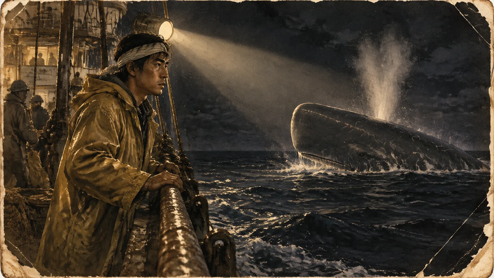
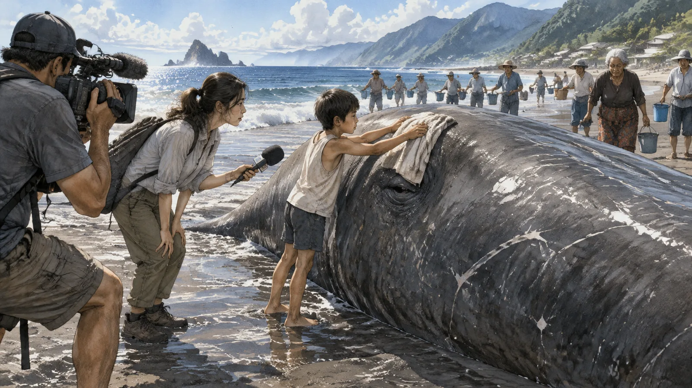
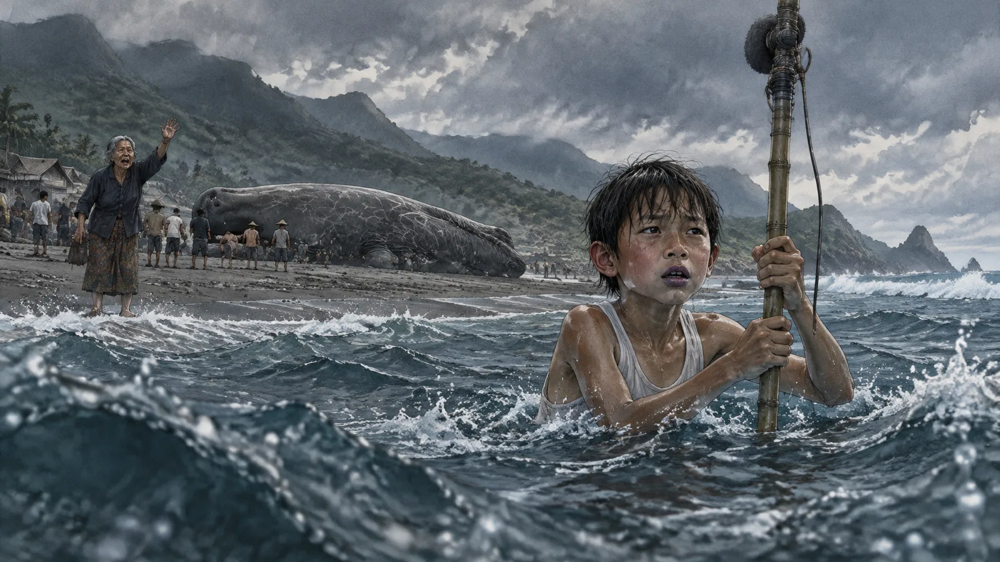
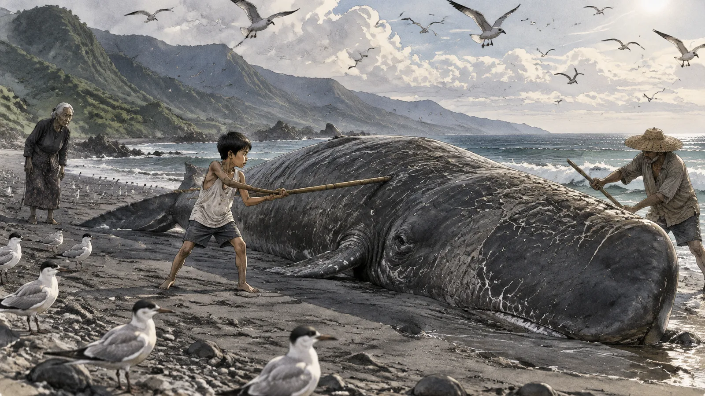
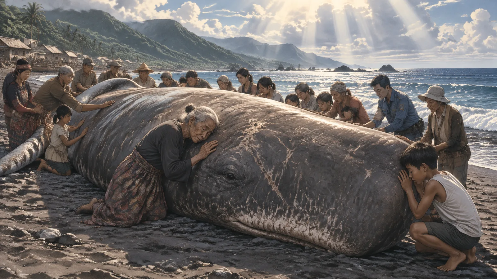

第一章擱淺
鯨魚是在清晨五點被發現的。
發現牠的是阿嬤。她每天清晨去海邊撿漂流木，撿了四十年，那天她走到沙灘的南邊，看到一座小山。灰色的，濕的，在晨光裡微微起伏。她走近，才發現那座山在呼吸。
她跑回村子，敲每一家的門。等大家跑到海邊的時候，太陽已經出來了，鯨魚躺在沙灘上，離水線大約三十公尺，尾巴朝海，頭朝陸地，像是自己走上來的。
牠很大。村長用步伐量了一下，說有十八步長。牠的皮膚是深灰色的，上面有很多白色的疤，有的是圓的，有的是長條的。牠的眼睛半開著，很小，跟身體比起來小得不成比例，眼睛裡是一種很深的、像海底一樣的黑。
「是抹香鯨。」阿嬤說。她年輕的時候在漁船上做過，認得。「這種鯨魚會潛到很深的地方，深到沒有光。」
村子裡沒有人知道該怎麼辦。他們住在台東的海邊，一個只有六十幾戶的小村子，最近的城市要開一個小時的車。村長打電話給縣政府，縣政府說會派人來，可是要等到下午。
「牠會死嗎？」小海問。
小海十一歲，是村子裡年紀最小的孩子。他站在鯨魚的頭旁邊，仰著頭看那隻眼睛。
「會。」阿嬤說，「鯨魚離開水，會被自己的重量壓死。牠的骨頭撐不住牠的肉。」
「那我們要把牠推回去。」
「推不動。」
小海看著鯨魚，看了很久。然後他跑回家，拿了一個水桶。
第二章水桶
一整個早上，小海在海邊跑來跑去。

他用水桶從海裡舀水，跑三十公尺，把水倒在鯨魚身上，再跑回去。一桶水倒在那麼大的身體上，像一滴眼淚掉在一面牆上，馬上就乾了。可是他一直跑。第十桶的時候，他的手臂開始抖。第二十桶的時候，他的腳在沙灘上絆倒了兩次。
村子裡的人站在旁邊看。有人搖頭，有人嘆氣，有人說這孩子。然後阿嬤走過去，從他手裡把水桶拿過來。
「妳要幹嘛？」小海說。
「換我。」阿嬤說。
她七十三歲，走路已經有一點跛了。她提著水桶走到海邊，舀了半桶——她提不動一桶——走回來，倒在鯨魚身上。然後再走回去。
第三個人是隔壁的阿榮伯。第四個是雜貨店的老闆娘。第五個、第六個，是幾個在港口修船的年輕人。到了中午，村子裡有二十幾個人在海邊排成一條線，水桶從海邊傳到鯨魚旁邊，一桶接一桶。

鯨魚沒有動。牠的呼吸很慢，每隔幾分鐘噴一次氣，噴氣孔在頭頂上，噴出來的是一團帶著魚腥味的白霧。每噴一次，站在旁邊的人就被淋一次。沒有人躲。
小海站在鯨魚的頭旁邊，看著那隻眼睛。他覺得那隻眼睛在看他。
「你從哪裡來？」他小聲說。
鯨魚沒有回答。可是牠的眼睛動了一下，很慢，像一顆很重的石頭在水裡轉了一個角度。
下午兩點，縣政府的人來了。
三個人，一台廂型車，帶了一些儀器。他們繞著鯨魚走了一圈，量了尺寸，拍了照，然後其中一個人把村長拉到旁邊，講了很久。村長回來的時候，臉色很難看。
「他們說沒有辦法。」村長說，「太大了。要吊車，要拖船，這裡沒有。他們說最好的方法是——等。」
「等什麼？」小海問。
村長沒有回答。
「等牠死。」阿嬤說。
第三章夜
那天晚上，沒有人回家。
村子裡的人在沙灘上生了火，圍著鯨魚坐著。有人帶了毯子，有人帶了便當，有人帶了收音機，放著老歌。水桶還在傳，只是慢了，一個小時幾桶。大家知道沒有用。可是大家還在傳。

小海坐在鯨魚的頭旁邊，背靠著牠的皮膚。牠的皮膚是涼的，粗糙的，像一塊很大的、濕的石頭。可是石頭不會呼吸。他感覺到牠每一次呼吸，背後那面牆就微微地起伏一次。
「阿嬤，」他說，「鯨魚會做夢嗎？」
阿嬤坐在火邊，看著海。
「會。」她說，「我聽船上的老人講過。鯨魚睡覺的時候，一半的腦子醒著，一半睡著。睡著的那一半會做夢。」
「夢什麼？」
「不知道。可能是海底。可能是牠的媽媽。可能是牠去過的地方。」阿嬤說，「鯨魚一輩子游幾萬公里，牠看過的東西比我們多。」
小海把耳朵貼在鯨魚的皮膚上。他聽到一種很低的聲音，低到不像聲音，像從地底下傳上來的震動。一下，很久，又一下。
「牠在說話。」他說。
「那是牠的心跳。」阿嬤說。
「不是。」小海說，「是說話。」
他閉上眼睛，聽。
✦
半夜，他睡著了。靠在鯨魚的頭旁邊，蓋著阿嬤的毯子。火還在燒，收音機還在放歌，可是聲音都變遠了。他聽到的是那個很低的聲音，一下，很久，又一下。
然後他在海裡。
不是在海面上，是在海裡面。很深。深到沒有光。可是他看得見——不是用眼睛，是用別的什麼。他看見周圍是黑的，可是黑裡面有形狀，有很遠的地方傳來的回音，有水流的方向。他在往下游。他很大。他的身體很長，尾巴一擺就是十幾公尺。他不需要呼吸。

他知道這是誰的夢。
他在鯨魚的夢裡。
第四章深處
夢裡的海很安靜。
小海——不對，在這裡他不是小海，他是牠——往下游。水越來越冷，壓力越來越大，可是他不怕。他的身體是為這個做的。他往下游了很久很久，久到他忘記上面有太陽，久到黑變成一種很舒服的東西。
然後他聽到了聲音。
很遠的地方，另一隻鯨魚在叫。那個聲音穿過幾百公里的海水，傳到他這裡，變成一種很低的、很長的、像嘆息一樣的東西。他知道那是誰。是他的母親。她在很遠的地方，在北邊，在一片有冰的海裡。她在叫他。
他回應了。他的聲音從胸腔裡發出來，穿過海水，往北邊去。
然後他看到了別的東西。
一艘船。在很上面，在海面上，船底是一個黑色的影子。船的聲音很吵，引擎的震動穿過海水，讓他的頭很痛。他往下潛，想離開那個聲音。可是那個聲音跟著他。到處都是。這裡一艘，那裡一艘，整個海面都是船的影子，整個海裡都是引擎的聲音。他聽不到母親了。她的聲音被蓋住了。

他往北游。他想找到她。他游了很多天，游過很多船，游過一些水很髒的地方，游過一片漂浮的垃圾，垃圾的下面是暗的。他一直叫，一直叫，可是他聽不到回應。
然後他到了一個地方，那裡的海很淺，很暖，海底是沙的。他很累。他不知道母親在哪裡。他往岸邊游，因為岸邊很安靜，沒有船。他游到水太淺的地方，肚子碰到沙，他繼續游，因為他不想再聽到引擎的聲音。
他上了岸。
他躺在沙上，很重，很重。他聽到有人在說話，聽到有人在跑，聽到水倒在他身上，很少的水，一點一點的。他很累。他想睡。
他做了一個夢。夢裡有一個小孩，坐在他頭旁邊，把耳朵貼在他的皮膚上，說：你從哪裡來？
✦
小海醒了。
天還沒亮。火快滅了。他坐起來，全身是汗，臉是濕的。他看著鯨魚的眼睛。
「你在找媽媽。」他說。
鯨魚的眼睛動了一下。
「你聽不到她。因為船太吵了。」
鯨魚噴了一口氣。白霧在黎明前的黑暗裡慢慢散開。
小海站起來，跑到阿嬤旁邊，把她搖醒。
「阿嬤，」他說，「我知道牠為什麼上來了。」
第五章阿公的鯨魚
第二天中午，阿嬤在火堆旁邊講了阿公的事。
不是講給小海聽的。是講給大家聽的——村子裡的人圍著火吃便當，有人問起阿嬤，說妳先生以前不是跑船的嗎，他有沒有看過這種事。阿嬤本來不想講。她從來不講阿公的事。可是她看了小海一眼，然後就講了。
「一九七九年。」她說，「他在一艘遠洋的船上，從高雄出去，要去南邊。船在黑潮上走了兩天，第三天早上，船長說有一隻鯨魚在跟著。」

「跟著船？」
「跟在船後面，大概一百公尺。不靠近，也不走。船開快牠就快，船開慢牠就慢。船員都跑去看。船長說不要理牠，鯨魚有時候會這樣，看到船好奇。」阿嬤把便當放下，「可是牠跟了三天。」
小海坐在鯨魚的頭旁邊，聽著。
「第一天晚上，你阿公做了一個夢。」阿嬤說，「他夢到自己在海裡，很深，看不到光。他說那不是他的夢，是別人的。他醒來的時候跟其他人講，大家笑他。第二天晚上他又夢到了。這次他看到一隻很大的鯨魚，跟一隻小的，在冰的下面游。大的在教小的怎麼叫。他說那個聲音他醒來以後還聽得到。」
「第三天呢？」阿榮伯問。
「第三天晚上，他沒有睡。他站在船尾，看著那隻鯨魚。他說牠一直在叫，可是船的引擎太吵，他聽不到，只看得到牠的頭浮上來，又下去，浮上來，又下去，像在說什麼。他站了一整夜。」阿嬤看著火，「天亮的時候，牠不見了。」
「就這樣？」
「就這樣。船進港，他下船，回家，然後就不講了。我問他那隻鯨魚在說什麼，他說他不知道，他說他差一點就聽懂了。」阿嬤停了一下，「他說，那三天，他覺得那隻鯨魚在找一個可以聽牠說話的東西。船上有三十個人，只有他一個人夢到。他說他覺得對不起牠。」
「為什麼對不起？」小海問。
「因為他聽到了，可是沒有聽懂。」阿嬤說，「他說，如果那時候他把引擎關掉——他做不到，那不是他的船——如果他關掉，也許他就聽懂了。」
火堆劈啪響了一聲。
「你阿公走的那年，」阿嬤說，「他躺在床上，最後幾天，一直說他聽到那隻鯨魚。他說牠回來了。他說牠在外面。我以為他在說胡話。」
她沒有再說下去。大家也沒有問。過了一會兒，有人站起來去傳水桶，有人去買飲料。小海坐在鯨魚的頭旁邊，看著那隻眼睛。
「阿公也聽到了。」他小聲說，「他只是沒有聽懂。」
鯨魚噴了一口氣。
✦
下午，來了一台電視台的車。
一個記者，一個攝影師，從台北開了六個小時來的。記者是一個很年輕的女生，看到鯨魚的時候「哇」了一聲，然後開始問問題。她問村長鯨魚什麼時候擱淺的，問縣政府的人為什麼還沒有處理，問阿嬤鯨魚會不會死。她問得很快，攝影機一直對著鯨魚。
然後她看到小海。

「小朋友，」她把麥克風遞過來，「你在做什麼？」
小海正在把一條濕毛巾蓋在鯨魚的眼睛上面，因為太陽太大，牠的眼睛會乾。
「幫牠遮太陽。」他說。
「你覺得牠會活嗎？」
小海看著她。
「牠在做夢。」他說。
記者愣了一下，笑了，說「好可愛」。攝影機轉開了，去拍鯨魚身上的裂縫。小海繼續把毛巾鋪好。他不在乎她信不信。
那天晚上的新聞播了三十秒。「台東海邊抹香鯨擱淺，村民接力搶救」。畫面裡有鯨魚，有水桶，有一個小孩把毛巾蓋在鯨魚眼睛上。沒有聲音。
第六章聲音
阿嬤沒有笑他。
她聽完，坐了很久，然後說：「你阿公也是這樣。第一天晚上夢到海底，第二天晚上夢到牠的媽媽。」
「那第三天呢？」
「第三天他沒有睡。」阿嬤說，「他說，有些東西醒著的時候講不出來。所以你要睡。你睡了，才聽得到。」
天亮了。村子裡的人陸陸續續醒來，有人去買早餐，有人繼續傳水桶。縣政府的人昨天走了，說今天會再來，「看看情況」。鯨魚的呼吸比昨天慢了。牠的皮膚開始乾，有一些地方裂開了，裂縫裡滲出很淡的血。
小海站在鯨魚的頭旁邊，想了很久。
「阿嬤，」他說，「牠聽不到牠媽媽，因為船太吵。可是牠在這裡，這裡沒有船。」
「所以？」
「所以如果牠媽媽在叫牠，牠現在應該聽得到。」小海說，「可是牠聽不到，因為牠在岸上。聲音在水裡才傳得遠。」
阿嬤看著他。
「你想做什麼？」
小海跑回家。他拿了一個東西回來——一台很舊的錄音機，是阿公留下來的，卡帶式的，還有一支麥克風。他把麥克風綁在一根竹竿上，走到海裡，走到水深到胸口的地方，把麥克風放進水裡。

「你在錄什麼？」阿榮伯在岸上喊。
「海的聲音。」小海說。
他站在水裡，錄了一個小時。水很冷，他的嘴唇發紫。阿嬤在岸上喊他上來，他不上來。錄音機的卡帶轉完了，他才走回岸上，把卡帶倒帶，按下播放，把錄音機放在鯨魚的頭旁邊。
喇叭裡是海的聲音。水流，氣泡，很遠的地方一艘船的引擎，一些聽不出來是什麼的雜音。
鯨魚沒有反應。
小海把錄音機關掉，坐在沙上。他知道這樣沒有用。海的聲音裡沒有鯨魚的聲音。牠的媽媽不在這片海裡。牠的媽媽在很北邊，在有冰的地方。
「牠聽不到牠媽媽。」他說，「所以牠不想回去。」
阿嬤在他旁邊坐下來。
「小海，」她說，「有時候，一個人聽不到牠要聽的聲音，是因為那個聲音不在了。」
小海看著她。
「你阿公走了以後，」阿嬤說，「我每天早上去海邊。我跟自己說是去撿漂流木。可是我是去聽。我聽了四十年。」
「有聽到嗎？」
阿嬤沒有回答。
第七章海鳥
第三天早上，海鳥來了。
先是幾隻，在天上繞。然後是十幾隻，落在沙灘上，離鯨魚二十公尺，站著，看。牠們知道。牠們比人早知道。

小海拿著一根竹竿，在鯨魚旁邊走來走去，海鳥靠近他就揮。海鳥飛起來，繞一圈，又落下來，離得更近一點。他揮了一個早上。他的手臂很痠，眼睛紅紅的，可是他一直揮。
縣政府的人站在旁邊看。其中一個人——昨天沒有來的，年紀比較大，戴一頂草帽——走過來，蹲在小海旁邊。
「小朋友，你知道牠為什麼會上來嗎？」
小海不理他，繼續揮竹竿。
「我做這個工作二十年。」草帽的人說，「這幾年，鯨魚擱淺越來越多。台灣一年有幾十隻。以前沒有這麼多。」
「為什麼？」小海還是不看他。
「不知道。有人說是船太多，引擎太吵，牠們聽不到彼此，迷路了。有人說是海軍的聲納，會把牠們的耳朵弄壞。有人說是海太髒，牠們生病了。有人說是海變暖了，牠們找不到吃的。」草帽的人說，「都有可能。也可能都是。」
小海停下來，看著他。
「牠聽不到牠媽媽。」他說。
草帽的人沒有笑。他看著小海，看了一會兒，然後點點頭。
「可能吧。」他說，「我們沒有辦法知道牠聽到了什麼。我們只知道牠聽不到的東西越來越多。」
一隻海鳥落在鯨魚的背上。小海衝過去，揮竹竿，海鳥飛走了。他站在那裡，喘著氣。
「你揮不完的。」草帽的人說，「牠們會一直來。」
「我知道。」
「那你為什麼還揮？」
小海想了一下。
「因為牠還在做夢。」他說，「不能讓牠們吵。」
草帽的人站起來，拍了拍膝蓋上的沙。他走到廂型車旁邊，拿了一根長長的、驅鳥用的桿子，走回來，站在鯨魚的另一邊。
「我幫你。」他說。
他們兩個人，一大一小，一人一邊，揮了一整個上午。海鳥沒有走。可是牠們也沒有靠近。
第八章回聲
第三天，鯨魚快不行了。
牠的呼吸變得很淺，很不規則，有時候隔十分鐘才噴一次氣。牠的眼睛半閉著，那種海底一樣的黑變淡了，變成灰的。牠身上的裂縫越來越多。有一些海鳥開始在附近盤旋。
縣政府的人來了，這次帶了一個獸醫。獸醫檢查了很久，然後跟村長說：「牠很痛苦。我們可以讓牠走得快一點。」
村長把這句話轉告村子裡的人。沒有人說話。
小海站在鯨魚的頭旁邊。他已經三天沒有好好睡覺，眼睛紅紅的，嘴唇還是紫的。他看著那隻變灰的眼睛。
「不要。」他說。
「小海——」
「牠在等。」小海說，「牠在等聽到。」
「聽到什麼？」獸醫問。
小海沒有回答他。他轉過身，走到阿嬤旁邊。
「阿嬤，妳說鯨魚一輩子游幾萬公里。」
「對。」
「那牠一定聽過很多鯨魚的聲音。牠媽媽的，牠朋友的，牠遇到的每一隻。」小海說，「那些聲音都在牠的腦子裡。牠一半的腦子睡著的時候，會做夢，會夢到那些聲音。」
「所以？」
「所以牠不需要聽到牠媽媽。」小海說，「牠需要的是，有人聽牠。」
阿嬤看著他，看了很久。然後她站起來，走到鯨魚旁邊，把手放在牠的皮膚上。她把耳朵貼上去。
她聽了很久。
然後她開始唱歌。

不是什麼特別的歌。是一首很老的、阿美族的歌，小海聽過，是阿嬤在撿漂流木的時候會哼的。歌詞的意思他不太懂，阿嬤說過是關於海的，關於一個人出海以後，岸上的人怎麼等他。
阿嬤唱得很輕，臉貼著鯨魚的皮膚，聲音從她的胸腔傳到鯨魚的身體裡。
鯨魚的眼睛動了一下。
然後阿榮伯走過來，把手放在鯨魚身上。然後是雜貨店的老闆娘。然後是修船的年輕人，然後是村長，然後是縣政府的人——他們猶豫了一下，也走過來了。二十幾個人，圍著那座灰色的小山，把手放在牠身上。
阿嬤在唱。其他人有的跟著哼，有的只是站著。
小海站在鯨魚的頭旁邊，把耳朵貼在牠的皮膚上。
他聽到了那個很低的聲音。一下，很久，又一下。可是這次不一樣。這次那個聲音裡面有別的東西。像很多個聲音疊在一起。像一群鯨魚在很深的海裡，一起叫。
他閉上眼睛。
第九章夢
他又在海裡了。
可是這次不是往下游。是往上。他很大，很重，可是他在往上游，往有光的地方。周圍的水越來越亮。他聽到聲音——不是引擎，是別的。是很多隻鯨魚的聲音，從四面八方傳來，低的，高的，長的，短的。他認得其中一個。
是他的母親。
她不在北邊。她在這裡。她一直在這裡，在他的腦子裡，在他一半睡著的那個地方。她從來沒有離開過。她的聲音跟其他所有他聽過的聲音一起，在他裡面，像一片海。
他往上游。水越來越亮。他看到海面了，海面上有一個影子，可是不是船。是一群人。他們的手貼在海面上，他們在唱歌。他聽得到。那首歌穿過水，傳到他這裡，變成一種很低的、很溫暖的東西。
他從海面浮上來。
太陽很大。空氣很暖。他噴了一口氣，白霧在陽光裡散開，變成一道很小的彩虹。
然後他往下潛。這次是自己要往下的。他知道他要去哪裡。他往北游，游向那片有冰的海。他不急。他一邊游一邊叫，叫給那些在他裡面的聲音聽。
他知道他們聽得到。
✦
小海醒過來的時候，阿嬤還在唱。
太陽已經很高了。他站起來，看著鯨魚。
鯨魚的眼睛閉上了。
牠的呼吸停了。噴氣孔不再噴氣。牠身上的裂縫不再滲血。牠躺在沙灘上，很安靜，像一座真正的山。
沒有人說話。阿嬤停下來，把手從鯨魚身上拿開。她的臉是濕的。
「牠走了。」獸醫說。
小海站在那裡，看著那隻閉上的眼睛。他不哭。他覺得自己應該哭，可是他沒有。他只是站著。
「牠回去了。」他說。
「什麼？」
「牠回去了。」小海說，「回海裡。牠找到牠媽媽了。」
沒有人懂他在說什麼。可是阿嬤走過來，把手放在他的頭上。
「我知道。」她說。
尾聲
鯨魚在第四天被拖走了。
縣政府找了一台吊車和一台大卡車，花了一整天，把牠運到一個研究單位。研究單位說牠是一隻年輕的雄性抹香鯨，大概十二歲，胃裡有一些塑膠，可是不多，不是死因。死因是擱淺。他們說牠可能是迷路了，可能是被船的噪音干擾了，可能是生病了。他們說得很客氣：「原因不明。」
沙灘上留下一個很大的凹痕，形狀像一隻鯨魚。過了幾次漲潮，凹痕就平了。
小海還是每天去海邊。他跟阿嬤一起，清晨五點，撿漂流木。他不再帶錄音機了。可是他會站在水裡，站一會兒，聽。
有一天早上，他站在水裡，聽到了什麼。很遠，很低，一下，很久，又一下。
他不確定是不是真的。可能是海浪，可能是船，可能是他自己的心跳。
可是他站在那裡，聽了很久。然後他小聲說：「我聽到了。」
阿嬤在岸上撿漂流木，抬起頭看他。
「聽到什麼？」
小海想了一下。
「不知道。」他說，「可是我聽到了。」
阿嬤笑了。她低下頭，繼續撿。海很亮，風很小，遠處有一艘船慢慢地開過去，安靜得像一片葉子。
（完）
留言板
看不懂、想補充、發現錯誤都歡迎留言；填個暱稱就能發。